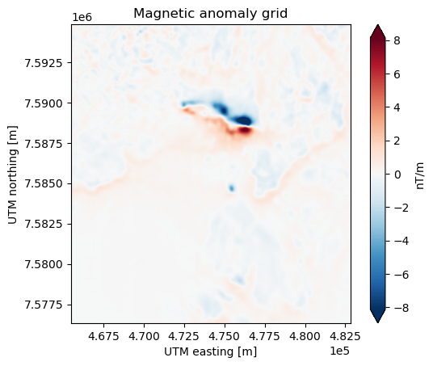
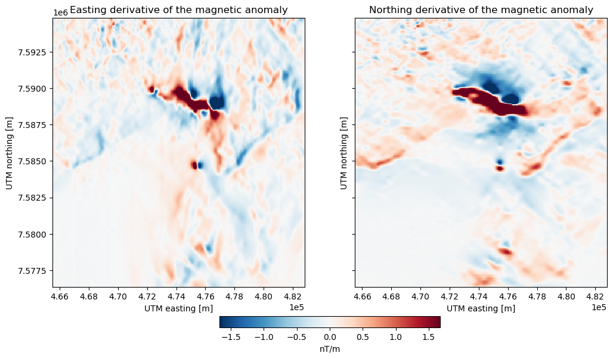
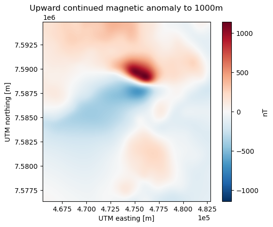
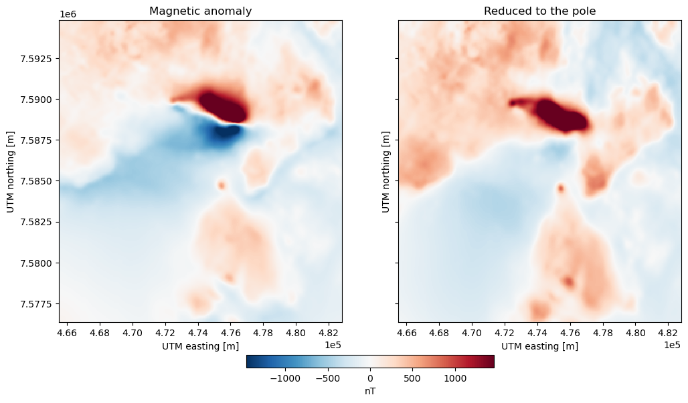
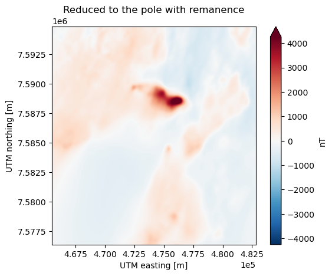
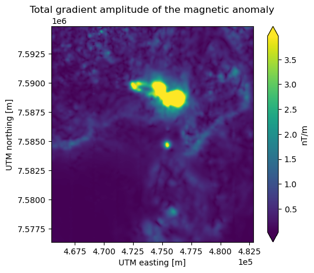

Grid transformations#
Harmonica offers some functions to apply FFT-based (Fast Fourier Transform) and finite-differences transformations to regular grids of gravity and magnetic fields located at a constant height.
In order to apply these grid transformations, we first need a regular grid in
Cartesians coordinates.
Let’s download a magnetic anomaly grid over the Lightning Creek Sill Complex,
Australia, readily available in ensaio.
We can load the data file using xarray:
import xarray as xr
import matplotlib.pyplot as plt
import pyproj
import verde as vd
import harmonica as hm
import ensaio
fname = ensaio.fetch_lightning_creek_magnetic(version=1)
magnetic_grid = xr.load_dataarray(fname)
magnetic_grid
<xarray.DataArray 'total_field_anomaly' (northing: 370, easting: 346)> Size: 1MB
array([[ 34.99995117, 36.19995117, 36.69995117, ..., -101.10004883,
-100.40004883, -99.60004883],
[ 36.49995117, 37.59995117, 37.99995117, ..., -102.20004883,
-101.50004883, -100.70004883],
[ 37.09995117, 38.19995117, 38.59995117, ..., -103.30004883,
-102.60004883, -101.90004883],
...,
[ 182.79995117, 172.39995117, 160.79995117, ..., 0.79995117,
-24.20004883, -41.80004883],
[ 182.09995117, 172.59995117, 161.39995117, ..., 5.99995117,
-21.50004883, -41.00004883],
[ 178.79995117, 170.39995117, 160.29995117, ..., 11.39995117,
-16.00004883, -35.80004883]], shape=(370, 346))
Coordinates:
* northing (northing) float64 3kB 7.576e+06 7.576e+06 ... 7.595e+06 7.595e+06
* easting (easting) float64 3kB 4.655e+05 4.656e+05 ... 4.827e+05 4.828e+05
height (northing, easting) float64 1MB 500.0 500.0 500.0 ... 500.0 500.0
Attributes:
Conventions: CF-1.8
title: Magnetic total-field anomaly of the Lightning Creek sill c...
crs: proj=utm zone=54 south datum=WGS84 units=m no_defs ellps=W...
source: Interpolated from airborne magnetic line data using gradie...
license: Creative Commons Attribution 4.0 International Licence
references: Geophysical Acquisition & Processing Section 2019. MIM Dat...
long_name: total-field magnetic anomaly
units: nT
actual_range: [-1785. 3798.]And plot it:
maxabs = vd.maxabs(magnetic_grid, percentile=99.9)
tmp = magnetic_grid.plot(
cmap="RdBu_r",
vmin=-maxabs,
vmax=maxabs,
cbar_kwargs={"label":"nT"},
)
plt.gca().set_aspect("equal")
plt.title("Magnetic anomaly grid")
plt.gca().ticklabel_format(style="sci", scilimits=(0, 0))
plt.show()

See also
In case we have a regular grid defined in geographic coordinates (longitude,
latitude) we can project them to Cartesian coordinates using the
verde.project_grid function and a map projection like the ones
available in pyproj.
Upward derivative#
Let’s calculate the upward derivative (a.k.a. vertical derivative) of the
magnetic anomaly grid using the harmonica.derivative_upward function:
deriv_upward = hm.derivative_upward(magnetic_grid)
deriv_upward
<xarray.DataArray (northing: 370, easting: 346)> Size: 1MB
array([[ 0.00392149, -0.03020041, -0.03536756, ..., -0.04226171,
-0.04011395, -0.05324249],
[-0.03893551, -0.06934878, -0.06971427, ..., -0.02488467,
-0.02337474, -0.03747796],
[-0.04212395, -0.07421057, -0.07659479, ..., -0.02333065,
-0.02383248, -0.03317766],
...,
[-0.24893064, -0.07536529, 0.02301565, ..., 0.17154972,
0.32659791, 0.52662516],
[-0.25872989, -0.10818937, -0.00694061, ..., 0.16703944,
0.3530013 , 0.5823102 ],
[-0.15762632, -0.04329555, 0.02397919, ..., 0.08397172,
0.23195226, 0.4514189 ]], shape=(370, 346))
Coordinates:
* northing (northing) float64 3kB 7.576e+06 7.576e+06 ... 7.595e+06 7.595e+06
* easting (easting) float64 3kB 4.655e+05 4.656e+05 ... 4.827e+05 4.828e+05
height (northing, easting) float64 1MB 500.0 500.0 500.0 ... 500.0 500.0And plot it:
maxabs = vd.maxabs(deriv_upward, percentile=99.9)
tmp = deriv_upward.plot(
cmap="RdBu_r",
vmin=-maxabs,
vmax=maxabs,
cbar_kwargs={"label":"nT/m"},
)
plt.gca().set_aspect("equal")
plt.title("Magnetic anomaly grid")
plt.gca().ticklabel_format(style="sci", scilimits=(0, 0))
plt.show()

Horizontal derivatives#
We can also compute horizontal derivatives over a regular grid using the
harmonica.derivative_easting and harmonica.derivative_northing
functions.
deriv_easting = hm.derivative_easting(magnetic_grid)
deriv_easting
<xarray.DataArray 'total_field_anomaly' (northing: 370, easting: 346)> Size: 1MB
array([[ 0.024, 0.017, 0.004, ..., 0.016, 0.015, 0.016],
[ 0.022, 0.015, 0.004, ..., 0.015, 0.015, 0.016],
[ 0.022, 0.015, 0.003, ..., 0.015, 0.014, 0.014],
...,
[-0.208, -0.22 , -0.221, ..., -0.553, -0.426, -0.352],
[-0.19 , -0.207, -0.218, ..., -0.602, -0.47 , -0.39 ],
[-0.168, -0.185, -0.2 , ..., -0.597, -0.472, -0.396]],
shape=(370, 346))
Coordinates:
* northing (northing) float64 3kB 7.576e+06 7.576e+06 ... 7.595e+06 7.595e+06
* easting (easting) float64 3kB 4.655e+05 4.656e+05 ... 4.827e+05 4.828e+05
height (northing, easting) float64 1MB 500.0 500.0 500.0 ... 500.0 500.0deriv_northing = hm.derivative_northing(magnetic_grid)
deriv_northing
<xarray.DataArray 'total_field_anomaly' (northing: 370, easting: 346)> Size: 1MB
array([[ 0.03 , 0.028, 0.026, ..., -0.022, -0.022, -0.022],
[ 0.021, 0.02 , 0.019, ..., -0.022, -0.022, -0.023],
[ 0.006, 0.005, 0.005, ..., -0.023, -0.024, -0.025],
...,
[-0.002, 0.014, 0.022, ..., 0.103, 0.036, -0.015],
[-0.04 , -0.02 , -0.005, ..., 0.106, 0.082, 0.06 ],
[-0.066, -0.044, -0.022, ..., 0.108, 0.11 , 0.104]],
shape=(370, 346))
Coordinates:
* northing (northing) float64 3kB 7.576e+06 7.576e+06 ... 7.595e+06 7.595e+06
* easting (easting) float64 3kB 4.655e+05 4.656e+05 ... 4.827e+05 4.828e+05
height (northing, easting) float64 1MB 500.0 500.0 500.0 ... 500.0 500.0And plot them:
fig, (ax1, ax2) = plt.subplots(
nrows=1, ncols=2, sharey=True, figsize=(12, 8)
)
maxabs = vd.maxabs(deriv_easting, deriv_northing, percentile=99)
tmp = deriv_easting.plot(
ax=ax1,
add_colorbar=False,
vmin=-maxabs,
vmax=maxabs,
cmap='RdBu_r',
)
tmp = deriv_northing.plot(
ax=ax2,
add_colorbar=False,
vmin=-maxabs,
vmax=maxabs,
cmap='RdBu_r',
)
ax1.set_aspect("equal")
ax2.set_aspect("equal")
ax1.set_title("Easting derivative of the magnetic anomaly")
ax2.set_title("Northing derivative of the magnetic anomaly")
ax1.ticklabel_format(style="sci", scilimits=(0, 0))
ax2.ticklabel_format(style="sci", scilimits=(0, 0))
fig.colorbar(tmp, ax=(ax1, ax2), orientation="horizontal", label="nT/m", fraction=.03, pad=0.08)
plt.show()
By default, these two functions compute the horizontal derivatives using
central finite differences methods. We can choose to use either the finite
difference or the FFT-based method through the method argument.
For example, we can pass method="fft" to compute the derivatives in the
frequency domain:
deriv_easting = hm.derivative_easting(magnetic_grid, method="fft")
deriv_easting
<xarray.DataArray (northing: 370, easting: 346)> Size: 1MB
array([[ 0.02761114, 0.00984372, 0.01258632, ..., 0.02717406,
0.0036508 , 0.02276466],
[ 0.02773598, 0.00573187, 0.01441921, ..., 0.02727587,
0.00311991, 0.02334708],
[ 0.02736286, 0.00647407, 0.01260454, ..., 0.02818958,
0.0014945 , 0.02215964],
...,
[-0.07503184, -0.28493023, -0.18435407, ..., -0.50830215,
-0.50286649, -0.13158079],
[-0.06453782, -0.26755448, -0.18352927, ..., -0.55686687,
-0.55337874, -0.14904561],
[-0.05511676, -0.23938189, -0.16763425, ..., -0.55001363,
-0.5572971 , -0.15336913]], shape=(370, 346))
Coordinates:
* northing (northing) float64 3kB 7.576e+06 7.576e+06 ... 7.595e+06 7.595e+06
* easting (easting) float64 3kB 4.655e+05 4.656e+05 ... 4.827e+05 4.828e+05
height (northing, easting) float64 1MB 500.0 500.0 500.0 ... 500.0 500.0deriv_northing = hm.derivative_northing(magnetic_grid, method="fft")
deriv_northing
<xarray.DataArray (northing: 370, easting: 346)> Size: 1MB
array([[ 0.00350919, 0.00291534, 0.00265726, ..., -0.02230842,
-0.02048468, -0.01664341],
[ 0.04232825, 0.04028832, 0.03771115, ..., -0.01502764,
-0.01644029, -0.02121647],
[-0.01337788, -0.01273705, -0.01076049, ..., -0.03093589,
-0.03061098, -0.02835857],
...,
[ 0.00309174, 0.01548766, 0.01928737, ..., 0.07829167,
0.00616601, -0.04651453],
[-0.0440146 , -0.01920544, -0.00096867, ..., 0.13871085,
0.11745692, 0.09614314],
[-0.05409737, -0.04234614, -0.0276312 , ..., 0.04308958,
0.05407327, 0.05720177]], shape=(370, 346))
Coordinates:
* northing (northing) float64 3kB 7.576e+06 7.576e+06 ... 7.595e+06 7.595e+06
* easting (easting) float64 3kB 4.655e+05 4.656e+05 ... 4.827e+05 4.828e+05
height (northing, easting) float64 1MB 500.0 500.0 500.0 ... 500.0 500.0fig, (ax1, ax2) = plt.subplots(
nrows=1, ncols=2, sharey=True, figsize=(12, 8)
)
maxabs = vd.maxabs(deriv_easting, deriv_northing, percentile=99)
tmp = deriv_easting.plot(
ax=ax1,
add_colorbar=False,
vmin=-maxabs,
vmax=maxabs,
cmap='RdBu_r',
)
tmp = deriv_northing.plot(
ax=ax2,
add_colorbar=False,
vmin=-maxabs,
vmax=maxabs,
cmap='RdBu_r',
)
ax1.set_aspect("equal")
ax2.set_aspect("equal")
ax1.set_title("Easting derivative of the magnetic anomaly")
ax2.set_title("Northing derivative of the magnetic anomaly")
ax1.ticklabel_format(style="sci", scilimits=(0, 0))
ax2.ticklabel_format(style="sci", scilimits=(0, 0))
fig.colorbar(tmp, ax=(ax1, ax2), orientation="horizontal", label="nT/m", fraction=.03, pad=0.08)
plt.show()

Important
Horizontal derivatives through finite differences are usually more accurate and have less artifacts than their FFT-based counterpart.
Upward continuation#
We can also upward continue the original magnetic grid using harmonica.upward_continuation.
This is, estimating the magnetic field generated by the same sources at
a higher altitude.
The original magnetic anomaly grid is located at 500 m above the ellipsoid, as
we can see in its height coordinate.
If we want to get the magnetic anomaly at 1000m above the ellipsoid, we need
to upward continue it a height displacement of 500m:
change_in_height = 500 # meters
upward_continued = hm.upward_continuation(
magnetic_grid, height_displacement=change_in_height
)
upward_continued
<xarray.DataArray (northing: 370, easting: 346)> Size: 1MB
array([[ 19.55620825, 19.27947097, 18.97006949, ..., -104.5277715 ,
-104.00305377, -103.51237675],
[ 19.11131778, 18.83284215, 18.52168951, ..., -104.97064033,
-104.450267 , -103.96352053],
[ 18.63232495, 18.35205701, 18.03910509, ..., -105.44585262,
-104.93001717, -104.44733358],
...,
[ 161.38902102, 161.11651289, 160.87879242, ..., 0.45282316,
-3.73975786, -7.71323984],
[ 160.97996734, 160.69101224, 160.43830842, ..., 3.41228276,
-0.93864591, -5.06866624],
[ 160.59789277, 160.29497591, 160.02940435, ..., 6.13383277,
1.64184139, -2.62848316]], shape=(370, 346))
Coordinates:
* northing (northing) float64 3kB 7.576e+06 7.576e+06 ... 7.595e+06 7.595e+06
* easting (easting) float64 3kB 4.655e+05 4.656e+05 ... 4.827e+05 4.828e+05Did you notice that the height coordinate is gone from the
upward-continued grid? We drop any non-dimensional coordinates when
doing upward continuation because we don’t know the name of the
vertical coordinate and any values there would be wrong after continuation.
If we want it back, we need to assign an updated version of it:
upward_continued = upward_continued.assign_coords(
{"height": magnetic_grid.height + change_in_height}
)
upward_continued
<xarray.DataArray (northing: 370, easting: 346)> Size: 1MB
array([[ 19.55620825, 19.27947097, 18.97006949, ..., -104.5277715 ,
-104.00305377, -103.51237675],
[ 19.11131778, 18.83284215, 18.52168951, ..., -104.97064033,
-104.450267 , -103.96352053],
[ 18.63232495, 18.35205701, 18.03910509, ..., -105.44585262,
-104.93001717, -104.44733358],
...,
[ 161.38902102, 161.11651289, 160.87879242, ..., 0.45282316,
-3.73975786, -7.71323984],
[ 160.97996734, 160.69101224, 160.43830842, ..., 3.41228276,
-0.93864591, -5.06866624],
[ 160.59789277, 160.29497591, 160.02940435, ..., 6.13383277,
1.64184139, -2.62848316]], shape=(370, 346))
Coordinates:
* northing (northing) float64 3kB 7.576e+06 7.576e+06 ... 7.595e+06 7.595e+06
* easting (easting) float64 3kB 4.655e+05 4.656e+05 ... 4.827e+05 4.828e+05
height (northing, easting) float64 1MB 1e+03 1e+03 1e+03 ... 1e+03 1e+03Now we can plot it:
tmp = upward_continued.plot(cmap="RdBu_r", center=0, cbar_kwargs={'label':'nT'})
plt.gca().set_aspect("equal")
plt.title("Upward continued magnetic anomaly to 1000m")
plt.gca().ticklabel_format(style="sci", scilimits=(0, 0))
plt.show()

Reduction to the pole#
We can also apply a reduction to the pole to any magnetic anomaly grid.
This transformation consists in obtaining the magnetic anomaly of the same
sources as if they were located on the North magnetic pole.
We can apply it through the harmonica.reduction_to_pole function.
Important
Reduction to the pole is unstable at low latitude regions and will result in artifacts.
The reduction to the pole needs information about the orientation of the
geomagnetic field at the location of the survey and also the orientation of the
magnetization vector of the sources.
The International Global Reference Field (IGRF) can provide us information
about the inclination and declination of the geomagnetic field at the time of
the survey. We don’t have exact dates for the survey, but we know it was
some time between 1985 and 1999. We’ll use July 1992 as a midpoint value.
It shouldn’t matter too much since the secular variation is small.
We can use the harmonica.IGRF14 class to calculate the field values
at the center of the survey:
igrf = hm.IGRF14("1992-07-01")
projection = pyproj.Proj(magnetic_grid.attrs["crs"])
longitude, latitude = projection(
magnetic_grid.easting.mean(),
magnetic_grid.northing.mean(),
inverse=True,
)
igrf_field = igrf.predict((longitude, latitude, magnetic_grid.height.mean()))
intensity, inclination, declination = hm.magnetic_vec_to_angles(
*igrf_field
)
print(inclination, declination)
-52.981303773347555 6.661091304280145
If we consider that the sources are magnetized in the same direction as the
geomagnetic survey (hypothesis that is true in case the sources don’t have any
remanence), then we can apply the reduction to the pole passing the same
inclination and declination for both the geomagnetic field and the
magnetization:
rtp_grid = hm.reduction_to_pole(
magnetic_grid,
inclination=inclination,
declination=declination,
magnetization_inclination=inclination,
magnetization_declination=declination,
)
rtp_grid
<xarray.DataArray (northing: 370, easting: 346)> Size: 1MB
array([[ -47.19848217, -46.24971763, -46.3940823 , ..., -143.76852306,
-143.5986643 , -143.06870174],
[ -46.99376822, -46.1621044 , -46.43490934, ..., -145.49403589,
-145.33196693, -144.93443201],
[ -49.27468509, -48.4547366 , -48.6545154 , ..., -147.27968841,
-147.05272012, -146.55882836],
...,
[ 88.64823925, 70.9804591 , 53.20790859, ..., -74.54282535,
-115.97183121, -141.11721519],
[ 85.66082781, 69.44309754, 52.67006468, ..., -77.829196 ,
-118.13814606, -142.73421604],
[ 83.43452858, 67.68974871, 51.45861253, ..., -84.68139719,
-123.33576693, -146.93344083]], shape=(370, 346))
Coordinates:
* northing (northing) float64 3kB 7.576e+06 7.576e+06 ... 7.595e+06 7.595e+06
* easting (easting) float64 3kB 4.655e+05 4.656e+05 ... 4.827e+05 4.828e+05
height (northing, easting) float64 1MB 500.0 500.0 500.0 ... 500.0 500.0And plot it:
fig, (ax1, ax2) = plt.subplots(
nrows=1, ncols=2, sharey=True, figsize=(12, 8)
)
maxabs = vd.maxabs(magnetic_grid, rtp_grid, percentile=99)
tmp = magnetic_grid.plot(
ax=ax1,
add_colorbar=False,
vmin=-maxabs,
vmax=maxabs,
cmap='RdBu_r',
)
tmp = rtp_grid.plot(
ax=ax2,
add_colorbar=False,
vmin=-maxabs,
vmax=maxabs,
cmap='RdBu_r',
)
ax1.set_aspect("equal")
ax2.set_aspect("equal")
ax1.set_title("Magnetic anomaly")
ax2.set_title("Reduced to the pole")
ax1.ticklabel_format(style="sci", scilimits=(0, 0))
ax2.ticklabel_format(style="sci", scilimits=(0, 0))
fig.colorbar(tmp, ax=(ax1, ax2), orientation="horizontal", label="nT", fraction=.03, pad=0.08)
plt.show()

The reduction concentrated the Lightning Creek anomaly and the negative values are spread out and mixed with the regional field. So we could consider this to be a valid reduction, indicating that the magnetization direction used is plausible.
If on the other hand we have any knowledge about the orientation of the
magnetization vector of the sources, we can specify the
magnetization_inclination and magnetization_declination.
In this case, we don’t have this information, but we’ll show an
example of what happens to the reduction using arbitrary values:
mag_inclination, mag_declination = -25, 21
tmp = rtp_grid = hm.reduction_to_pole(
magnetic_grid,
inclination=inclination,
declination=declination,
magnetization_inclination=mag_inclination,
magnetization_declination=mag_declination,
)
rtp_grid
<xarray.DataArray (northing: 370, easting: 346)> Size: 1MB
array([[ -81.49188166, -83.81166997, -87.4454937 , ..., -160.73624446,
-159.67052376, -157.60044337],
[ -81.47670321, -83.91776762, -87.67588875, ..., -162.07200281,
-161.00067596, -159.09375803],
[ -83.69604411, -86.23555285, -89.86325964, ..., -163.465497 ,
-162.28733124, -160.2210639 ],
...,
[ -72.42335408, -102.76710834, -122.82470172, ..., -340.35718859,
-367.31767093, -359.36555088],
[ -76.26603489, -104.7565693 , -123.76864761, ..., -344.18270674,
-369.30498409, -360.47065289],
[ -77.8890439 , -106.27648033, -125.12229925, ..., -352.73660709,
-376.2504682 , -366.4246865 ]], shape=(370, 346))
Coordinates:
* northing (northing) float64 3kB 7.576e+06 7.576e+06 ... 7.595e+06 7.595e+06
* easting (easting) float64 3kB 4.655e+05 4.656e+05 ... 4.827e+05 4.828e+05
height (northing, easting) float64 1MB 500.0 500.0 500.0 ... 500.0 500.0maxabs = vd.maxabs(rtp_grid, percentile=99.9)
tmp = rtp_grid.plot(
cmap="RdBu_r", vmin=-maxabs, vmax=maxabs, cbar_kwargs={'label':'nT'},
)
plt.gca().set_aspect("equal")
plt.title("Reduced to the pole with remanence")
plt.gca().ticklabel_format(style="sci", scilimits=(0, 0))
plt.show()

Gaussian filters#
We can also apply Gaussian low-pass and high-pass filters to any regular grid.
These two need us to select a cutoff wavelength.
The low-pass filter will remove any signal with a high spatial frequency,
keeping only the signal components that have a wavelength higher than the
selected cutoff wavelength.
The high-pass filter, on the other hand, removes any signal with a low spatial
frequency, keeping only the components with a wavelength lower than the cutoff
wavelength.
These two filters can be applied to our regular grid with the
harmonica.gaussian_lowpass and harmonica.gaussian_highpass.
Let’s define a cutoff wavelength of 5 kilometers:
cutoff_wavelength = 5e3 # meters
Then apply the two filters to our magnetic grid:
magnetic_low = hm.gaussian_lowpass(
magnetic_grid, wavelength=cutoff_wavelength
)
magnetic_low
<xarray.DataArray (northing: 370, easting: 346)> Size: 1MB
array([[ 26.19749931, 25.76102509, 25.29562078, ..., -115.02084362,
-114.39317873, -113.80018014],
[ 25.73531926, 25.29874018, 24.83328074, ..., -115.5144068 ,
-114.8879775 , -114.2959871 ],
[ 25.2403159 , 24.80363184, 24.33811919, ..., -116.02007887,
-115.39473619, -114.80359802],
...,
[ 176.79671739, 177.10775539, 177.49503401, ..., -1.12201732,
-3.85979378, -6.64560518],
[ 176.73321954, 177.02358656, 177.39052565, ..., 2.24523117,
-0.54361021, -3.38272072],
[ 176.63467089, 176.90588171, 177.25399731, ..., 5.45621176,
2.61900447, -0.27068908]], shape=(370, 346))
Coordinates:
* northing (northing) float64 3kB 7.576e+06 7.576e+06 ... 7.595e+06 7.595e+06
* easting (easting) float64 3kB 4.655e+05 4.656e+05 ... 4.827e+05 4.828e+05
height (northing, easting) float64 1MB 500.0 500.0 500.0 ... 500.0 500.0magnetic_high = hm.gaussian_highpass(
magnetic_grid, wavelength=cutoff_wavelength
)
magnetic_high
<xarray.DataArray (northing: 370, easting: 346)> Size: 1MB
array([[ 8.80245186, 10.43892608, 11.40433039, ..., 13.92079479,
13.9931299 , 14.20013131],
[ 10.76463191, 12.30121099, 13.16667044, ..., 13.31435797,
13.38792867, 13.59593827],
[ 11.85963527, 13.39631934, 14.26183198, ..., 12.72003004,
12.79468736, 12.90354919],
...,
[ 6.00323378, -4.70780421, -16.69508284, ..., 1.92196849,
-20.34025505, -35.15444365],
[ 5.36673163, -4.42363539, -15.99057448, ..., 3.75472 ,
-20.95643862, -37.61732811],
[ 2.16528028, -6.50593054, -16.95404614, ..., 5.94373942,
-18.61905329, -35.52935975]], shape=(370, 346))
Coordinates:
* northing (northing) float64 3kB 7.576e+06 7.576e+06 ... 7.595e+06 7.595e+06
* easting (easting) float64 3kB 4.655e+05 4.656e+05 ... 4.827e+05 4.828e+05
height (northing, easting) float64 1MB 500.0 500.0 500.0 ... 500.0 500.0Let’s plot the results side by side:
fig, axes = plt.subplots(nrows=1, ncols=3, sharey=True, figsize=(12, 8))
grids = [magnetic_grid, magnetic_low, magnetic_high]
maxabs = vd.maxabs(*grids, percentile=99)
for grid, ax in zip(grids, axes):
tmp = grid.plot(
ax=ax,
add_colorbar=False,
vmin=-maxabs,
vmax=maxabs,
cmap='RdBu_r',
)
ax.set_aspect("equal")
axes[0].set_title("Original")
axes[1].set_title("After low-pass filter")
axes[2].set_title("After high-pass filter")
fig.colorbar(tmp, ax=axes.ravel().tolist(), orientation="horizontal", label="nT", fraction=.03, pad=0.08)
plt.show()

Total gradient amplitude#
Hint
Total gradient amplitude is also known as analytic signal.
We can also calculate the total gradient amplitude of any magnetic anomaly grid. This transformation consists in obtaining the amplitude of the gradient of the magnetic field in all the three spatial directions by applying
We can apply it through the harmonica.total_gradient_amplitude function.
tga_grid = hm.total_gradient_amplitude(
magnetic_grid
)
tga_grid
<xarray.DataArray (northing: 370, easting: 346)> Size: 1MB
array([[0.03861836, 0.04455406, 0.04407794, ..., 0.05025985, 0.04814695,
0.05978932],
[0.04940621, 0.07371739, 0.07236767, ..., 0.03644512, 0.03543132,
0.04679314],
[0.04790018, 0.07587627, 0.07681641, ..., 0.0360322 , 0.03660584,
0.04383785],
...,
[0.32439862, 0.23297194, 0.22328171, ..., 0.58808784, 0.53799461,
0.63361113],
[0.32348286, 0.23442257, 0.21816776, ..., 0.63367356, 0.59349298,
0.70340967],
[0.23963734, 0.19502693, 0.20263021, ..., 0.61247388, 0.53729494,
0.60943501]], shape=(370, 346))
Coordinates:
* northing (northing) float64 3kB 7.576e+06 7.576e+06 ... 7.595e+06 7.595e+06
* easting (easting) float64 3kB 4.655e+05 4.656e+05 ... 4.827e+05 4.828e+05
height (northing, easting) float64 1MB 500.0 500.0 500.0 ... 500.0 500.0And plot it:
cpt_lims = vd.minmax(tga_grid, min_percentile=1, max_percentile=99)
tga_grid.plot(vmin=cpt_lims[0], vmax=cpt_lims[1],cbar_kwargs={'label':'nT/m'})
plt.gca().set_aspect("equal")
plt.title("Total gradient amplitude of the magnetic anomaly")
plt.gca().ticklabel_format(style="sci", scilimits=(0, 0))
plt.show()
